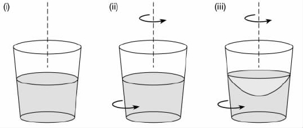
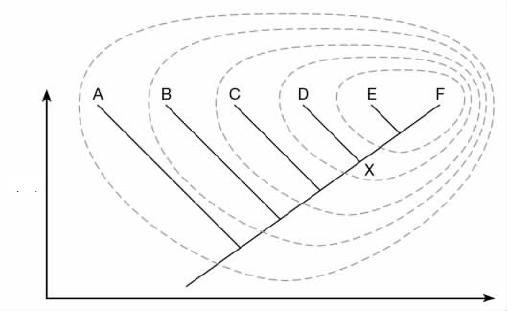
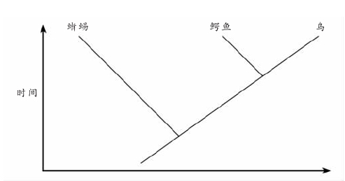
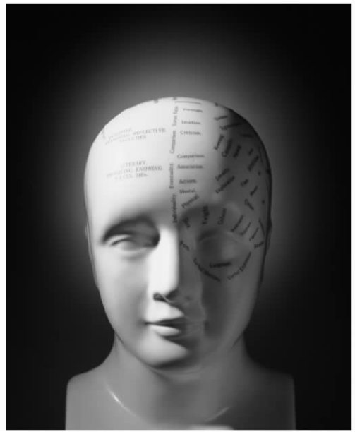
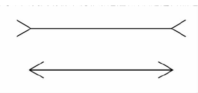

迄今为止我们所探讨的问题——归纳、解释、实在论和科学变迁——都属于所谓的“一般科学哲学”。这些问题都是关注一般意义上的科学探究的本质，而不是特别地与（例如）化学或地质学相关的本质。然而，特定科学中也有许多有趣的哲学问题，这些问题属于我们所说的“特殊科学的哲学”。这些问题通常部分依赖于哲学沉思，部分依赖于经验事实，从而十分有趣。在本章中，我们要考察分别来自物理学、生物学和心理学的三个这类问题。
莱布尼兹VS.牛顿：关于绝对空间
我们的第一个主题是关于17世纪两个杰出科学家——莱布尼兹（1646—1716）和牛顿（1642—1727）之间就时空本质的争论。我们将主要关注空间问题，而时间问题也与此紧密相关。在其著名的《自然哲学原理》一书中，牛顿为一种被称为“绝对主义者”的空间观念进行了辩护。根据这种观点，空间拥有一种“绝对”存在，超越于各种物体的空间关系之上。牛顿把空间看做一个三维的容器，上帝在创造世界的时候把物质世界放在其中。这就意味着空间在有物体之前就已存在，正如在把食品放进食品盒之前该容器就已经存在一样。根据牛顿的看法，空间与食品盒之类的日常容器之间的区别仅在于，日常的容器显然尺寸有限，而空间却在每个方向上都无限延伸。
莱布尼兹强烈地反对这种绝对主义的空间观和牛顿哲学中的许多其他观点。他认为空间仅是由物体间的空间关系构成的集合。“上”“下”“左”“右”就是空间关系的个例——它们是物体相互之间具有的关系。这种“关系论者”的空间概念意味着，在有物体之前空间并不存在。莱布尼兹认为在上帝创造物质世界之时 ，空间才开始存在；空间并不是预先存在着并等待物体填充进去。所以把空间设想成一个容器甚或任何种类的实体都不是有效的想法。可以通过一个类比来理解莱布尼兹的观点。一份合法的合同由两方——如一所房子的买方和卖方——之间的关系构成。如果其中一方去世，合同便终止。所以，说合同独立于买卖双方间的关系而存在是不切实际的——合同就是这种关系。同样，空间也不是什么超越于物体间的空间关系而存在的东西。
牛顿引入绝对空间的概念主要是为了区别绝对运动和相对运动。相对运动是一个物体相对于另一物体的运动。就相对运动而言，问一个物体是否“真正”在运动是没有意义的——我们只能问它是不是相对于另一物体在运动。想象一下，两人沿着一条直道一前一后慢跑着，相对于站在路边的旁观者，这两个人明显处在运动中：他们正离得越来越远。但是这两个慢跑者相对于彼此却没有运动：只要他们保持同样的速度跑向同一方向，他们的相对位置就仍然不变。所以一个物体相对于一物可能处于运动之中，而相对于另一物却处于静止状态。
牛顿相信，绝对运动同相对运动一样也是存在的。常识支持这种观点。直观上，问一个物体是否“真正地”在运动确实 是有意义的。想象处于相对运动中的两个物体——如一架空中的滑翔机和地面上的一位观察者。现在相对运动是对称的：正如滑翔机相对于地面上的观察者是运动的，地面上的观察者相对于滑翔机也是运动的。但是问以下问题是否确实有意义：观察者或滑翔机，或者两者，是否“真正地”在运动？如果确有意义，我们就需要绝对运动的概念。
绝对运动到底是 什么？在牛顿看来，它是相对于绝对空间 自身 的物体运动。牛顿认为在任何时间，每个物体都在绝对空间中有一个特定的位置。如果一个物体从一个时刻到另一个时刻在绝对空间中改变了位置，该物体就处于绝对运动状态；反之，则处于绝对静止状态。所以为区分相对运动和绝对运动，我们需要把空间看做一个绝对的实体，超越于物体之间的关系。请注意，牛顿的推理依赖于一个重要的假设。他毫无疑问地假设所有运动都是相对于某个参照物的。相对运动是相对于其他物体的运动；绝对运动是相对于绝对空间自身的运动。所以在某种意义上，对于牛顿来说，即使绝对运动也是“相对的”。实际上牛顿是在假设，处于运动状态，不论绝对运动还是相对运动，不可能是关于物体的“原初事实”；它只能是关于物体与其他事物间关系的事实。这里的其他事物可能是另一个物体，也可能是绝对空间。
莱布尼兹承认，在相对运动和绝对运动之间存在着区别，但是他反对把绝对运动解释为与绝对空间相关的运动。他认为绝对空间的概念是不严密的。对此，他作了大量论证，其中许多在本质上是神学的。从哲学的观点看，莱布尼兹最有趣的论证是，绝对空间与他所说的不可区分事物的同一性原则（PII）相矛盾。莱布尼兹认为这条原则毋庸置疑是正确的，所以他拒斥绝对空间的概念。
不可区分事物的同一性原则指的是，如果两个物体不可区分，它们就是同一的，即它们实际完全是同一个物体。说两个物体不可区分意味什么呢？这意味着根本不能在这两者之间找到任何区别——两者具有完全相同的属性。所以如果该原则是真的，那么任何两个真正不同的对象必须至少在一个属性上不同——否则它们就是同一个而不是两个物体。不可区分事物的同一性原则在直观上非常具有说服力。找到两个不同的物体共同具有所有 属性的例子当然不容易。甚至工厂里大批量制造的两个产品通常也会在许多方面不同，即便这些差别不能通过肉眼观察到。该原则总体上是否正确，是哲学家们仍在争论的复杂问题；答案部分取决于究竟什么能被算做“属性”，部分取决于量子物理学中的疑难问题。但是我们目前关注的是莱布尼兹对这条原则的应用。
莱布尼兹用了两个思想试验来揭示牛顿的绝对空间理论和不可区分事物的同一性原则之间的矛盾。他的论证策略是间接的：为了论证，他假设牛顿的理论正确，然后他力图证明这一假设会带来矛盾；矛盾不可能为真，所以莱布尼兹的结论是牛顿的理论必为假。回想一下牛顿的观点，他认为在时间上的任何时点，宇宙中的每一个物体在绝对空间中都有一个确定的位置。莱布尼兹要我们设想两个不同的宇宙，其中包含有彼此完全相同的物体。在宇宙1中，每个物体在绝对空间中都占据一个特定的位置。在宇宙2中，每个物体在绝对空间中都被移到了一个不同的位置，（例如）向东移了两英里。没有任何方式可以区分开这两个宇宙。因为正如牛顿自己所承认的，我们不能观察到绝对空间中物体的位置。我们所能观察到的只是物体相 对于其他物体 的位置，而这些位置没有变化——所有物体在移动的量上都相同。任何观察和实验都永远不能揭示出我们是生活在宇宙1还是宇宙2中。
第二个思想试验与第一个相类似。回想一下牛顿的理论，他认为一些物体在绝对空间中移动而另外一些物体处于静止状态。这就意味着在每一时刻，每个物体都有一个确定的绝对速度。［速度（velocity）是在一定方向上的速度（speed），所以一个物体的绝对速度是该物体在绝对空间中一定方向上的移动速度。绝对静止的物体绝对速度为零。］现在想象有两个不同的宇宙，它们之中有完全相同的物体。在宇宙1中，每个物体都有一个特定的绝对速度。在宇宙2中，每个物体的绝对速度都增加了一个固定的量，比如说（增量为）在一个规定的方向上每小时300公里。我们还是永远不能区分开这两个宇宙。因为正如牛顿自己所承认的，我们不可能观察到一个物体相对于绝对空间的移动速度。我们只能观察到物体相对于其他物体来说 移动的速度——而这些相对速度将保持不变，因为每个物体的速度都增加了完全相同的量。没有任何观察和实验能够揭示出我们是生活在宇宙1还是宇宙2。
在上述每个思想试验里，莱布尼兹都描绘了两个宇宙，用牛顿自己的理论永远无法区分开——它们完全不可分辨。但是根据不可区分事物的同一性原则，这就意味着这两个宇宙实际上是同一个。所以结果就是，牛顿的绝对空间理论是错误的。还可以用另外一种方式来看待这一点：牛顿的理论暗示，处于绝对空间中某一处的宇宙与移动到不同处的该宇宙之间有真正的差异。但是莱布尼兹指出，只要宇宙中每个物体位置移动的量相同，这种差异就完全不可觉察。如果在两个宇宙之间觉察不到任何差异，它们就是不可区分的，不可区分事物的同一性原则告诉我们，这两个宇宙实际上是同一个。所以牛顿理论的一个错误是：它在只有一个事物的时候认为有两个事物存在。绝对空间的概念因而与不可区分事物的同一性原则相冲突。莱布尼兹的第二个思想试验逻辑与此相同。
实际上，莱布尼兹是在声称绝对空间是一个空概念，因为它不能在观察上作出区分。如果既不能觉察到绝对空间中物体的位置，也不能觉察到相对于绝对空间的物体速度，那又为什么要相信绝对空间？莱布尼兹在此诉诸一个非常合理的原则，即仅当不可观察的实体的存在会带来能够观察到的差异，我们才应该在科学中假定该实体存在。
但是牛顿认为他能够揭示绝对空间确实 有可观察的效应。这就是他著名的“旋转桶”论证的要点所在。他让我们想象一个装满了水的桶，它由一根穿过位于其底部的一个孔洞的绳子悬挂着（见图12）。

图12 牛顿的“旋转桶”试验。在步骤i，桶和水都静止；在步骤ii，桶相对于水在转；在步骤iii，桶和水协力地转动。
最初水相对于桶处于静止状态，然后绳子被搓动了许多次再放开。随着绳子的展开，桶开始旋转。起先，桶中的水保持静止，水面是平的；桶相对于水在旋转。但是稍后，桶把它的运动传递给水，水也开始随着桶协力旋转；桶与水相对于彼此又静止了。操作显示，之后水面如图所示在桶边处向上凸起。
是什么造成水面的隆起？牛顿问道。明显这与水的旋转有关。但旋转是运动的一种类型，而对牛顿来说，物体的运动总是相对于其他物体的。所以我们必然要问：水相对于什么在旋转？显然不是相对于桶，因为桶和水在协力旋转，因而它们之间相对静止。牛顿认为水是相对于绝对空间在旋转，并且这导致了水面的向上凸起。所以绝对空间的确在事实上有可观察的效应。
你也许会认为牛顿的论证中有个明显的缺陷。就算水不是相对于桶在旋转，为什么就能得出一定是相对于绝对空间在旋转？水的旋转是相对于做这个实验的人，相对于地球的表面，以及相对于固定的星辰，是否其中的任何一个当然都有可能导致水面的隆起？牛顿对这一运动有个简单的回答。想象一个只包含该旋转的桶的宇宙。在这个宇宙中，我们不能用水是相对于其他物体在旋转来解释水面的隆起，因为不存在其他物体，并且与之前一样，水相对于桶是静止的。绝对空间是剩下的水的旋转唯一可以相对的东西。所以我们必须相信绝对空间，不然就不能解释为什么水面会隆起。
实际上，牛顿是在说，尽管一个物体在绝对空间中的位置和它相对于绝对空间的速度不能被觉察到，但说出一个物体相对于绝对空间何时在加速 却的确 可能。因为当一个物体旋转时，根据定义它就在加速，即使旋转的速率不变。这是因为在物理学上，加速度被定义成速度变化的比率，并且速度是一定方向上的速度。旋转的物体一直在改变着运动的方向，结果就是它们的速度不是不变的，因此它们在加速。隆起的水面恰恰就是所谓“惯性效应”——由加速运动产生的效应——的一个例子。另外一个例子是当飞机起飞时，你所获得的被推向椅背的感觉。牛顿坚信，惯性效应的唯一可能的解释是，经受那些效应的物体相对于绝对空间在加速。在一个只有加速物体的宇宙中，绝对空间是加速度唯一能够相对的。
牛顿的论证很有力，但不能说服人。因为如果旋转桶试验是在一个没有其他物体的宇宙中完成的，牛顿如何知道水面会向上隆起？牛顿想当然地假设，我们在这个世界中所发现的惯性效应在没有其他物体的世界中也会保持不变。这明显是个非常重要的假设，许多人已经质疑牛顿有何理由如此设想。所以，牛顿的假设不能证明绝对空间的存在。相反，它为莱布尼兹的辩护者平息了来自外界的一种挑战，即要求他们提出惯性效应之外的替代解释。
莱布尼兹也面临着不借助绝对空间来解释绝对运动和相对运动之间区别的挑战。在这个问题上，莱布尼兹撰文称，“当实体变化的直接原因在实体本身时”，该实体就在真正地或绝对地运动。回想一下滑翔机和地面上的观察者的例子，相对于彼此，两者都在运动。为了确定哪个在“真正地”运动，莱布尼兹会说我们需要确定变化（即相对运动）的直接原因是在滑翔机、观察者还是这两者。这种关于如何区别绝对运动和相对运动的提议，避免了一切对绝对空间的参照，但是却很不清晰。莱布尼兹从未严格地解释过在一个物体中“变化的直接原因”是什么意思。但是也许他的意图是要拒斥牛顿的假设，即一个物体的运动，不管是相对运动还是绝对运动，都只能是关于该物体与其他物体间关系的一个事实。
令人感兴趣的是，关于绝对和相对的争论并没有消逝。牛顿关于空间的论述与他的物理学有密切的关系，而莱布尼兹的观点是对牛顿观点的直接回应。所以也许有人会认为17世纪以来的物理学的发展，到目前应该已经解决了这一问题。但是这却没有发生。尽管人们曾经普遍认为，爱因斯坦的相对论已经作出了偏向于莱布尼兹的论断，但是近些年来这种观点日益遭到批判。源于牛顿和莱布尼兹之间的争论在300多年后变得更为激烈。
生物学分类的问题
分类，或者说把正在研究的对象归到一般的种类中，在每门科学中都起到作用。地理学家按形成方式把岩石分为火成岩、沉积岩以及变质岩。经济学家按公平程度将税制分为比例税制、累进税制及累退税制。分类的主要作用是传达信息。如果化学家告诉你某物是金属，那就告诉了你很多关于它的可能性状。分类提出了一些有趣的哲学问题。这些问题大部分源于这一事实，即任何给定的对象集合原则上都可以按很多不同的方式来划分类别。化学家根据物质的原子数目来划分物质，产生了元素周期表。但是他们同样也能按照物质的颜色、气味或密度来划分物质的类别。我们该如何在这些可能的分类方式中作出选择？存在一种“正确的”分类方式吗？或者是否所有的分类方案最终都是任意的？这些问题在生物分类或分类学中显得特别紧要，正是我们在此要关注的。
生物学家传统上用林奈系统来划分植物和有机生物，这一系统是以18世纪瑞典博物学家卡尔·林奈（1707—1778）来命名的（见图13）。林奈系统的基本元素对许多人来说简单而熟悉。首先，个体的有机生物属于一个种 ，然后每个物种属于一个属 ，每个属又属于一个科 ，每个科属于一个目，每个目属于一个纲 ，每个纲属于一个门，而每个门又属于一个界 。多种中间等级，如亚种、亚科 和总科 也被加以识别。种是基本的分类单元，属、科、目等等被视做“高级分类单元”。一个物种的标准拉丁名指示了该物种所归入的属，仅此而已。例如，你和我都属于智 人 ，这是人属中唯一存活的物种。人属中其他两个物种是直立 人 和能人 ，这两个种现在都已经灭绝了。人属又属于人科，人科又属于类人猿总科，类人猿总科又属于灵长目，灵长目又属于哺乳动物纲，哺乳动物纲又属于脊索动物门，脊索动物门属于动物界。
应该注意，林奈划分有机生物的方法是层级式的：众多种处于单个属中，众多属又处于单个科中，众多科又处于单个目中，以此类推。所以当我们向上推移时，会发现每个层上的分类单元越来越少。在底部差不多有数百万物种，但是到了顶部仅有五个界：动物、植物、真菌、细菌和原生物（海藻、海草等）。并非科学中的每个分类系统都是等级式的。化学中的周期表就是非等级式分类的一个例子。不同的化学元素并不是像林奈系统中种的划分方式，被安置在越来越具有总括性的分组中。我们必须面对的一个重要问题是，生物学分类为什么 应该是层级式的。
林奈系统在过去几百年中一直很好地满足了博物学家们的需要，并且一直被延用至今。在某些方面这令人惊讶，因为在这段时期内生物学理论已经发生了很大改变。现代生物学的奠基石是达尔文的进化论，这一理论认为当代的物种源自远祖物种；这种理论与古老的、圣经所启示的观点相冲突，后者认为每一物种都是被上帝独立创造出来的。达尔文的《物种起源》一书于1859年出版，但是直到20世纪中叶，生物学家才开始发问进化论是否应该影响有机体分类的方式。直到20世纪70年代，两个对立的分类学派才出现，这两个学派为该问题提供了竞争性的解答。按照分支分类学派 的观点，生物学分类应该力图反映物种间的进化关系，所以进化史的知识对于作出好的分类是不可或缺的。但根据表现型分类学派 的观点，情况却不是这样：分类学能够而且应该完全独立于进化方面的考虑因素。第三个派别被称做进化分类学派 ，他们力图把前两者的观点结合起来。
图13 林奈的名著《自然系统》，该书介绍了他对植物、动物和矿物质的分类。
为了理解分支分类学派和表现型分类学派之间的争论，我们必须把生物学分类的问题一分为二。第一个问题是如何把有机体划归到种中去，这被称做“物种问题”。这个问题远没有得到解决，但是在实际中生物学家通常能够就如何划定物种的界限达成一致，尽管也有一些很难划界的情况。一般而言，如果有机体相互之间能够杂交繁殖，生物学家就把这些有机体归为同一种，反之，就把它们归为不同种。第二个问题是把一组物种归入到更高级的分类单元中去，这显然预设第一个问题已经有了解决方案。正如所发生的那样，分支分类学派和表现型分类学派虽然通常在物种问题上不能达成一致，但是他们之间的争论主要集中在更高级的分类单元上。所以此刻，我们先忽略物种问题——假设有机体已经以一种令人满意的方式被归入所属的种当中去了。问题是：下一步该怎么办？我们要使用什么原则来把这些种划分到更高级的分类单元中去？
为了突出这一问题，我们先来思考下面的例子。人类、黑猩猩、大猩猩、倭黑猩猩、猩猩和长臂猿通常被一起归入类人猿总科。但是狒狒又不算做类人猿，为什么会这样呢？把人类、黑猩猩和大猩猩等放在一组，而又不把狒狒放在该组中，理由是什么呢？表现型分类学派的答案是，前一组都共有很多狒狒所没有的特征，例如没有尾巴。按照这种观点，分类学的编组应该基于相似性 ——应该把在重要方面相互类似的物种放在一起，排除不相类似的物种。直观上，这是一种合理的观点。因为它与分类的目的在于传达信息的观念是完全吻合的。如果分类学的分组基于相似性，知道一个特定的有机体属于哪个组就会告诉你很多关于它的可能特征。如果被告知一个给定的有机体属于类人猿总科，你将会知道它没有尾巴。而且，被传统分类学认可的许多分组似乎确实基于相似性。举个明显的例子，植物都具有动物所没有的很多特征，所以从表现型分类学派的观点看，把所有植物放在一个界而把所有动物放在另一界是很合理的。
然而，分支分类学派坚称，分类不该考虑相似性。真正需要的是物种间的进化关系——我们所知的种系发生 关系。分支分类学派同意狒狒应处于包括了人类、黑猩猩和大猩猩等的类群之外，但是如是判定的理由与物种间的相似和差异无关。真正原因在于，类人猿总科物种之间比它们与狒狒之间关联得更为密切。确切说来，这是什么意思呢？它意味着所有类人猿总科物种都有一个共同的祖先，这一祖先却不是狒狒的。需要注意的是，这并不是 说类人猿总科物种和狒狒根本没有过共同的祖先。相反，如果在进化的时间上你能够追溯得足够久远，任何两个物种都有一个共同的祖先——地球上的所有生命被认定为有唯一的起源。关键之处在于，类人猿物种与狒狒的共同祖先也是许多其他物种，如各种各样的猕猴种的祖先。所以分支分类学派声称，包括了类人猿总科物种和狒狒的任何分类学类群必须也包括这些其他的物种。任何分类学类群都不能够仅仅 包括类人猿物种和狒狒。
分支分类学派的核心观点是，所有的分类群，不管是属、科、总科还是其他，都必须是单系的 。单系类群包括一个祖先物种和所有它的后代，但是不包括其他任何物种。单系类群大小各不一样。在一极是所有曾经存在过的物种形成一个单源类群，假定地球上的生命只有过一次起源。在另一极是只有两个物种的单系类群——如果它们是一个共同的祖先仅有的后代。只包括类人猿总科物种和狒狒在内的类群不是单系的，因为正如我们所看到的，类人猿总科物种和狒狒的共同祖先也是猕猴的祖先。所以按照分支分类学派的观点，它就不是一个真正的分类群。不管类群的成员有多么简单，只要该类群不是单系的，它就不允许出现在分支分类学的分类中。因为分支分类学派认为，与“自然”的单系类群相比，这种分组完全是人为的。
单系的概念通过图形很容易理解。且看下图（图14）——通常称为进化树 ，该图表示了六个同期的物种（A——F）间的种系发生关系。如果我们在时间上回溯得足够久远，这六个物种都有一个共同的祖先，但是一些物种比其他物种间联系得更为紧密。物种E和F有一个非常近的共同祖先——它们的分支在相当近的过去相交过。相反，物种A与其余的后代在很久之前就分道扬镳了。现在来看{D、E、F}这一组。它是一个单系类群，因为它包含且只包含了所有只属于一个（未命名的）祖先物种的后代，在节点“X”，这一物种分为两枝。{C、D、E、F}组同样也是一个单系类群，{B、C、D、E、F}组也是一样。但{B、C、D、F}组却不是单系类群。原因在于，这四个物种的共同祖先也是物种E的祖先。图中所有单系类群都是环状的；任何其他的物种类群都不是单系的。

图14 表示六个同期物种间的种系发生关系的进化树。
分支分类学派与表现型分类学派间的争论绝不纯粹是理论上的——有很多他们互有分歧的实际案例。一个著名的例子是关于爬虫纲或者爬行动物的。传统的林奈分类学认为蜥蜴和鳄鱼属于爬虫纲，但把鸟排除在爬虫纲之外而归入一个单独的鸟纲中。表现型分类学派赞成这一传统分类，因为鸟有其独特的、不同于蜥蜴、鳄鱼和其他爬行动物的身体结构和生理机能。但是分支分类学派主张爬虫纲根本不是一个真正的分类群，因为它不是单系的。如上图进化树（图15）所示，蜥蜴和鳄鱼的共同祖先也是鸟的祖先；所以把蜥蜴和鳄鱼放在一个把鸟排除在外的类群中违背了单系性要求。分支分类学派因此建议放弃传统的分类习惯：生物学家根本不应该谈论爬虫纲，它是一个人造的而非自然的类群。这是一个非常极端的建议，即使那些赞同分支分类学精神的生物学家，通常都不愿意放弃被博物学家们很好地使用了几个世纪的传统分类范畴。

图15 表示蜥蜴、鳄鱼和鸟之间的种系发生关系的进化树。
分支分类学派坚持认为，自己的分类方法是“客观的”而表现型分类学派的方法不是。这一指责当然有正确之处。因为表现型分类学派把物种间的相似性作为分类的基础，而对相似性的判断总会部分地含有主观成分。任何两个物种在一些方面都有相似之处，而在另一些方面不相似。例如，两个昆虫物种可能在身体结构上非常相似，但在摄食习惯上非常不同。那么，为了判断相似性，我们该选择哪些“方面”呢？表现型分类学派希望通过定义一种“整体相似性”的标准来避免这一问题，这种标准将考虑一个物种的所有特征，这样就有可能建立起完全客观的分类。尽管这一想法听起来很好，但是它却不可行，主要是因为没有明显的计算特征的方法。当今很多人认为“整体相似性”的观念在哲学上是可疑的。表现型的分类确实存在，并用在了实践中，但是它们并非完全客观。对相似性的不同判断导致了不同的表现型分类，没有明显的方法可用来在它们之间进行选择。
分支分类学派也面临着一系列它自己的问题。其中最严重的问题是，为了按照分支分类学的原则建立一个分类，我们就需要在设法分类的物种间弄清种系发生的关系，而这是非常困难的。仅通过观察这些物种显然不能弄清这些关系——它们只能通过推理得出。现在已经提出了多种推导种系发生关系的方法，但是它们还不十分完善。实际上，随着分子遗传学提出越来越多的证据，物种间种系发生关系的设想很快被推翻了。所以真正把分支分类学的思想变成实践是不容易的。在分类系统中只承认物种的单系类群当然省事，但是如果不知道一个给定的类群是否是 单系的，这种方法用途就很有限。实质上，进化分类构建了关于物种间种系发生关系的假设，因而本来就是推测性的。表现型分类学派反对性地认为分类不应该在这方面有理论负荷。他们认为分类系统应该先于而非决定于对进化历史的推测。
尽管将分支分类学付诸实践存在着困难，并且分支分类学派在实际中常常建议对传统分类范畴进行相当根本性地修正，还是有越来越多的生物学家正转向这种分支分类学的观点。这主要是因为，分支分类学排除了表现型和其他分类法所具有的模糊性——它的分类原则尽管很难付诸实施，却非常清晰。并且，关于这一观点，即物种的单系类群是“自然的单元”而其他类群却不是，有一些非常直观的东西。此外，分支分类学还为生物学分类为什么应该是有层次的提供了真正的理由。如上面图15所示，单系类群总是处在彼此的内部，如果严格遵循单系性要求，分类的结果就自然而然有层次。立足于相似性的分类方式也会引出层次性的分类，但表现型分类学家对于为什么 生物学分类应该有层次却没有提供类似的解释。非常惊人的是，博物学家几百年前就已开始对有机生物进行层级式分类，但是如此分类的真正原因直到最近才弄清楚。
意识是模块化的吗？
心理学的一个主要工作是理解人类如何执行他们的认知任务。“认知任务”并不仅仅指解纵横字谜之类的事情，也指安全地过马路、理解他人所说的话、辨认别人的面容以及在商店里核对找零之类的普通任务。不能否认，人类非常擅长于其中的许多任务——如此擅长以至于我们通常做得很快，几乎不伴随有意识的思考。为了认识这一点有多么不寻常，让我们来考虑一个事实，即不管付出多大的努力和代价，机器人从来都没有被设计成哪怕只有一点点像人类在真实生活情境中那样行动。没有机器人能够像人类普通的一员那样机敏地解纵横字谜，或者参与一个对话。不知为何，人类能够最轻松地完成复杂的认知任务。我们所知的认知心理学，其主要解释目标就在于设法理解这是如何可能的。
我们所关注的焦点是在认知心理学家中由来已久且不曾间断的一个争论，它所涉及的是人类意识的建构。一种观点认为，人类意识是个“万能解题器”。这意味着意识中有一套通用的解题技巧，或“通用智能”，意识把它们运用于无限多的认知任务上。所以不管人们是在数弹子，决定去哪家饭馆吃饭，还是在努力学一门外语，所使用的都是同一套认知能力——这些认知任务代表了人类通用智能的不同应用。与此相对的另一种观点则认为，人类意识中包含大量专门的子系统或模块，每一种都是被设计用来执行非常有限的一类任务而不能执行其他任务（见图16）。这被称做意识的模块性 假说。例如，人们普遍相信有一个特殊的语言习得模块，这一观点源自语言学家诺姆·乔姆斯基。乔姆斯基认为，儿童并不是通过听取成人的谈话后用他们的“通用智能”来找出所说语言的规则；而是在人类儿童中有一种独特的、自行运转的“语言习得机制”，它唯一的功能是，在适当刺激的情形下，让他或她学会语言。乔姆斯基为此论断提供了一系列给人深刻印象的证据——例如，甚至那些只有很低的“通用智能”的人通常也能通过学习把语言说得非常好。
模块性假说的一些最有说服力的证据来自于对脑损伤病人的研究，这种研究也被称为“缺陷研究”。如果人类心灵是万能解题器，我们就能预知，脑损伤会大致同等地影响所有认知能力。现实却并非如此。相反，脑损伤通常削弱某些认知能力而不伤及其他认知能力。例如，被称为“韦尼克区”的脑部的伤害会使得病人不能理解言语，尽管他们仍然能够说出流畅的、符合语法的句子。这就强烈地表明，句子的生成和理解有独立的模块——这样就能解释为什么丧失了后一种能力并不必然引起前一种能力的丧失。另外一些脑损伤的病人失去了长期记忆（遗忘症），但是短期记忆以及说话和理解能力丝毫没有受损。这似乎再次支持了模块性观点而反驳了把意识看成万能解题器的观点。
这种神经心理学上的证据尽管很有说服力，却没有一劳永逸地解决模块性的问题。一方面，这种证据比较稀少——显然不能只是为了了解认知能力受影响的状况而随意损坏人脑。另一方面，正如在科学中通常存在的，关于数据应该如何解释存在着严重的分歧。一些人认为，所观察到的脑损伤病人的认知障碍模式并不意味着意识是模块性的。他们声称，即使意识是万能解题器，即不是模块性的，脑损伤不同程度地影响不同的认知能力仍然是可能的。所以他们主张不能仅从缺陷研究来“轻率判断”意识的结构，这种研究最多只能提供有瑕疵的证据。

图16 一种假设性的模块化意识示意图。
最近许多对模块性的关注要归功于杰里·福多尔，一位有影响力的美国哲学家和心理学家。福多尔于1983年出版了《意识的模块性》一书，该书既有对模块究竟为何物的非常清晰的论述，也有对哪些认知能力是模块化的、哪些不是的有趣假设。福多尔认为大脑模块有大量突出的特征，下面是其中最重要的三个特征：（i）它们是领域化的 ；（ii）它们的运行是强制性的 ，（iii）它们是信息分隔的 。非模块化的认知系统不具有其中任何一个特征。福多尔接着主张，人类意识虽非全部但却部分是模块化的：有些认知任务我们用专门的模块来解决，有些任务我们用“通用智能”来解决。
说一个认知系统是领域化的，就是说它是专门化的：它负责一组有限的、精确划定的任务。乔姆斯基所假定的“语言习得机制”就是领域化系统的一个很好的例子。这种机制的唯一功能就是使儿童学会语言——它并不帮儿童学会下棋、数数或者做其他任何事。所以这种机制完全忽略非语言性的输入。说一个认知系统是强制性的，就是说我们不能选择是否让该系统运作。语言的感知是一个很好的例子。如果你听到一句用你所通晓的语言说出的句子，你就不得不把它听成是说出了一个句子。如果有人要你把该句听成“纯粹的噪音”，不论如何努力，你都无法做到。福多尔指出，并非所有认知过程在这方面都是强制性的。思维 明显就不是这样。如果有人让你回想生命中最恐惧的时刻，或者让你想象中了彩票后最想做的事，你明显能够照做。所以思维和语言感知在这方面非常不同。

图17 米勒-利耶尔错觉。两条横线在长度上是相等的，但是上面的那条看起来更长。
信息分隔，即心理模块的第三个也是最重要的特征，又是怎样的呢？有个例子能最好地解释这一概念。观察一下图17中的两条线。
上面的那条线在多数人看来要比底下的那条长一点。但实际上这是一种视觉上的错觉，称做米勒-利耶尔错觉。实际上这两条线一样长。对于为什么上面那条线看起来更长，有着多种解释，这些解释并不是我们在此要关注的。这里的关键在于：即使知道它是一种视觉幻觉 ，这两条线看起来仍然不一样长。在福多尔看来，这一简单的事实对于理解意识结构有着重要的启发。它表明，关于两条线不一样长的信息已被存储在认知意识的一块区域中，这块区域是我们的感知机制所不能达到的。这就意味着我们的感知机制是信息分隔的——它们不能获得我们拥有的所有信息。如果视觉感知不是以这种方式被信息分隔，而是能够使用我们存储在意识中的所有信息，那么只要被告知这两条线实际上一样长，这种错觉就会消失。
信息分隔的另外一个可能的例子来自人类恐惧症的现象。拿恐蛇症，或者说对蛇的恐惧的例子来说，这种恐惧症在人类中非常普遍，在许多其他的灵长类动物中亦然。这容易理解，因为蛇对于灵长类动物来说非常危险，所以通过自然选择，就很容易进化出对蛇的本能恐惧。但是不管对我们为什么这么怕蛇如何进行解释，关键之处仍在于下面这一点：即使你知道特定的一种蛇没有危险性，例如已经知道它的毒腺已被除去，你仍然很可能害怕这条蛇，而且不愿意触摸它。当然，这种恐惧症通常能通过训练来克服，但那是另外一回事。这里相关的要点是，该蛇不危险的信息不能进入你意识的这一部分，该部分在你看到蛇时会引起害怕的反应。这说明，每个人身上可能都有与生俱来的、信息分隔式的“恐蛇”模块。
你也许想知道为什么意识的模块性问题在根本上是一个哲学问题。意识是否是模块化的，这是否真的只是个经验事实的问题，尽管不容易回答？实际上这种说法不是很正确。模块性争论在一个方面是哲学性的，该方面关系到我们该怎么看待认知任务和认知模块。赞成模块性的人认为意识包含有执行不同认知任务的特定模块；反对模块性的人否定这一点。但是我们如何判定两个认知任务是同一类还是不同类呢？脸部识别是单一的认知任务还是由两个不同的认知任务构成的：识别男性的脸和识别女性的脸？做长除法和乘法是不同的认知任务，还是都是更一般的算术运算任务的一部分？这类问题是概念上的，或者说是哲学上的，而不是直接经验上的，它们对于模块性争论可能非常重要。假设模块性的一位反对者提出了一些实验性证据，表明我们仅使用同一套认知能力来执行许多不同类型的认知任务。她的反对者可能会接受这些实验性数据，但是同时声称，相关认知任务都是同 一类型的，因此这些数据完全与模块性相符合。所以尽管乍看起来不然，意识的模块化争论还是深陷在哲学争论中。
最热衷地赞成模块性的人相信意识完全由模块构成，但是这种观点并不被广泛接受。福多尔本人也认为，感知和语言很可能是模块化的，但思想和推理几乎肯定不是。为什么不是？假设你正参加陪审团，在决定是宣告有罪还是无罪裁决。你将怎样处理这一任务？你会考虑的一个重要的问题是，被告的陈述在逻辑上是否一致——是否没有矛盾？你可能问自己，现有的证据是否刚好与被告的罪行相符，或者是否很强地支持了罪行的成立。显然你在此所用的推理技巧——检查逻辑一致性和评估证据——是通用的 技巧；它们不是专门设计出来用于陪审团的。你在许多领域都使用这些技巧。所以你在仔细考虑被告的罪行时所运用的认知能力不是领域化的。同样它们的运用也不是强制性的——你必须有意识地思考被告是否有罪，并且能够在任何你想要停止的时刻，例如在午休时间，停止这种思考。最重要的是，这里同样也没有信息分隔。你的任务是全面考虑 ，决定被告是否有罪，所以你也许必须运用所拥有的任何背景信息，只要你认为相关。例如，如果被告在审问之下紧张痉挛，并且你相信紧张的痉挛总是有罪的一种标志，你就可能会利用这一信念来作出裁决。所以这里没有信息的储存，它是你用来作出裁决的认知机制所不能通达的（尽管法官可能会提醒你忽视某些事情）。简言之，这里不存在决定一名被告是否有罪的模块。你是用“通用智能”解决这一认知问题的。
福多尔的命题，即意识尽管不是全部但部分是模块化的，这样看来便十分合理。但是确切说来有多少模块、这些模块具体负责什么，在当前的研究状况下还是无法回答。福多尔本人对认知心理学解释人类意识运作方式的的可能性非常悲观。他坚信，只有对模块化的系统才能进行科学地研究——非模块化系统因并非信息分隔而更难以做出模型。所以在福多尔看来，认知心理学家最好的研究策略是关注感知和语言，而不管思维和推理。但是福多尔思想的这个方面颇具争议。并非所有心理学家在意识的哪些部分是模块化的、哪些不是的问题上都同意他的观点，也并非所有心理学家都赞同，只有模块化的系统能够被科学地研究。